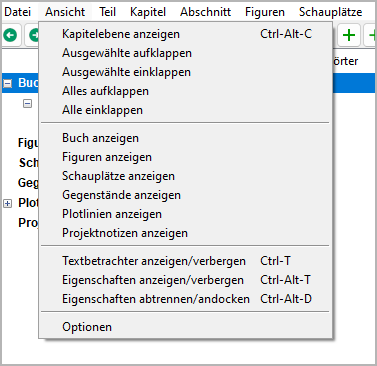
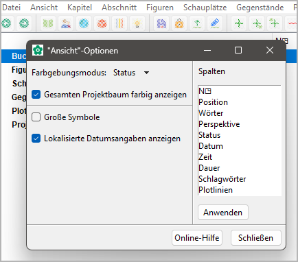

Ansicht-Menü
Control the display

Kapitelebene anzeigen
Hide the sections
with Ansicht > Kapitelebene anzeigen or Ctrl-Alt-C,
you can collapse the tree, so that only parts and chapters are visible.
Ausgewählte aufklappen
Show a whole branch
With Ansicht > Ausgewählte aufklappen, you can expand a selected tree element.
Ausgewählte einklappen
Hide child elements
With Ansicht > Ausgewählte einklappen, you can collapse a selected branch.
Alles aufklappen
Show the whole tree
With Ansicht > Alles aufklappen, you can expand the whole tree.
Alle einklappen
Hide child elements
With Ansicht > Alle einklappen, you can hide all tree elements except the main categories.
Buch anzeigen
Gehe zu the “Buch” branch and expand it
With Ansicht > Ansicht Buch, you can select and open the “Buch” branch.
Figuren anzeigen
Gehe zu the “Figuren” branch and expand it
With Ansicht > Ansicht Figuren, you can select and open the “Figuren” branch.
Schauplätze anzeigen
Gehe zu the “Schauplätze” branch and expand it
With Ansicht > Ansicht Schauplätze, you can select and open the “Schauplätze” branch.
Gegenstände anzeigen
Gehe zu the “Gegenstände” branch and expand it
With Ansicht > Ansicht Gegenstände, you can select and open the “Gegenstände” branch.
Plotlinien anzeigen
Gehe zu the “Plotlinien” branch and expand it
With Ansicht > Plotlinien anzeigen, you can select and open the “Plotlinien” branch.
Projektnotizen anzeigen
Gehe zu the “Projektnotizen” branch and expand it
With Ansicht > Ansicht Planning, you can select and open the “Projektnotizen” branch.
Textbetrachter anzeigen/verbergen
Show/hide the novel text
With Ansicht > Textbetrachter anzeigen/verbergen or Ctrl-T,
you can open or close the text viewer window,
showing part/chapter/section Titels and section content.
Hinweis
On reopening, the windows shows the text, where the tree is selected.
When changing the tree selection, the text moves along.
However, the text can be scrolled independently with the verical scrollbar, or the mousewheel.
You can select text with the mouse, and copy it to the clipboard with
Ctrl-C.You cannot edit the text. For this, you might want to install an editor plugin, such as nv_editor.
Eigenschaften anzeigen/verbergen
Show/hide the selected element’s properties
With Ansicht > Eigenschaften anzeigen/verbergen or Ctrl-Alt-T,
you can open or close the element properties window.
Hinweis
On reopening, the window shows the properties of the currently selected element.
Eigenschaften abtrennen/andocken
Show the selected element’s properties either in the main window or in its own window
With Ansicht > Eigenschaften abtrennen/andocken or Ctrl-Alt-D,
you can detach or dock the element properties window .
Hinweis
On closing the detached window, the properties are docked again.
Optionen
Project independent program settings
With Ansicht > Optionen, You can open a dialog for settings concerning the display.

Farbgebungsmodus
Set criteria according to which normal sections are colored in the tree
- Keiner
Normal sections are black on white by default.
- Status
Normal sections are colored according to their completion status (Gliederung, Entwurf, 1. Überarbeitung, 2. Überarbeitung, or Fertiggestellt).
- Arbeitsphase
Normal sections are highlighted if their completion status is behind the work phase defined in the Buch properties.
Große Symbole in der Werkzeugleiste
By default, the icon size is 16x16 pixels. If the Große Symbole in der Werkzeugleiste checkbox is ticked, 24x24 icons are used after the next program startup.
Bemerkung
This applies not only to the toolbar, but also to all other icons that decorate the application’s control elements.
Spalten
Change the column order
From top to bottom in the list means from left to right in the tree.
Just drag and drop to change the order.
Click the Anwenden Schaltfläche to apply changes.